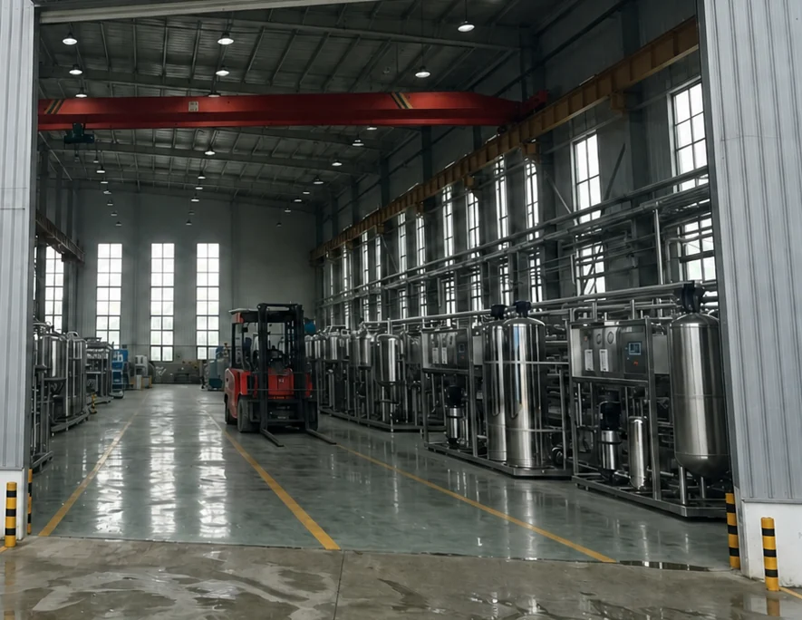
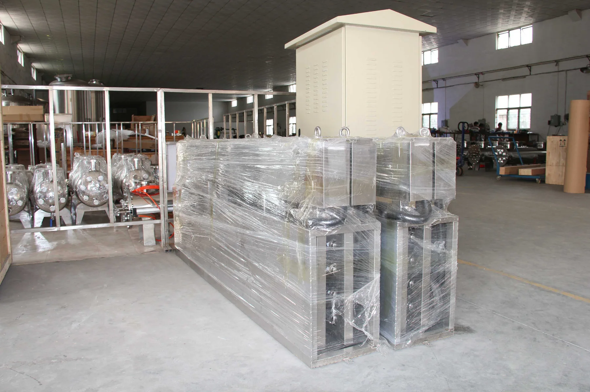
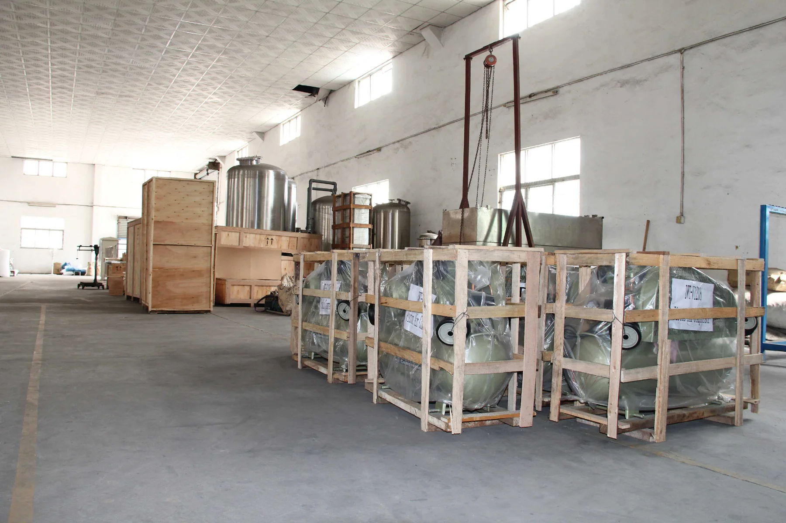
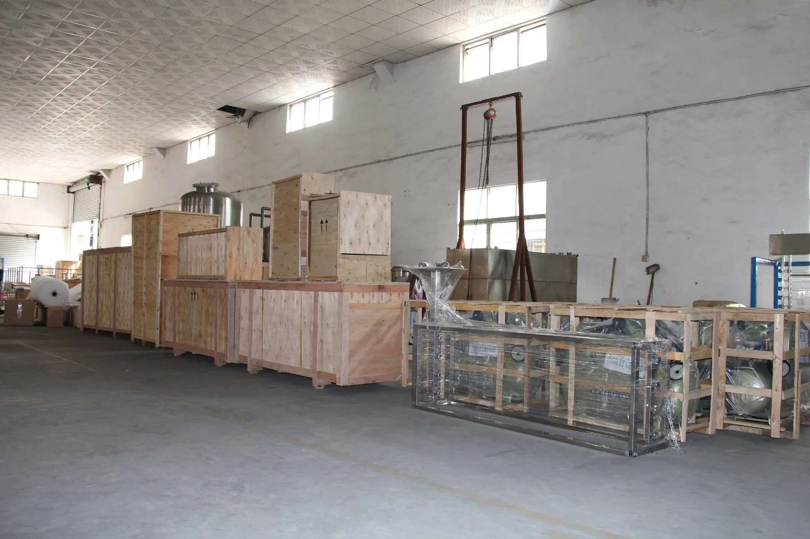
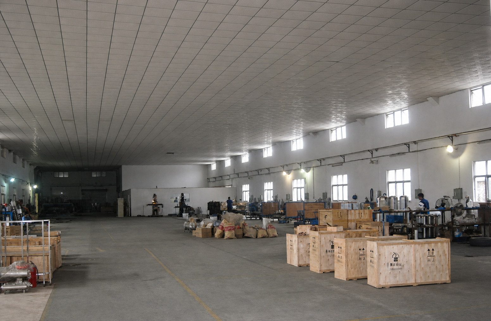
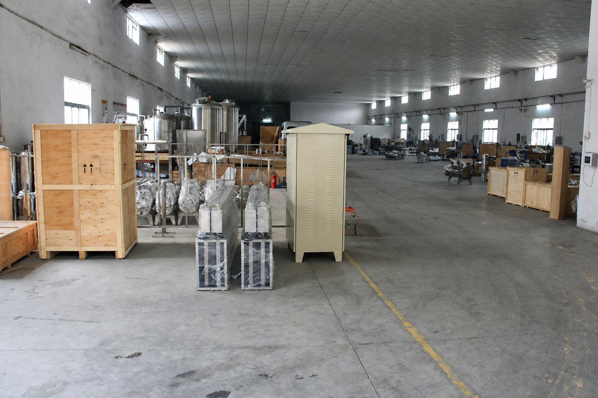
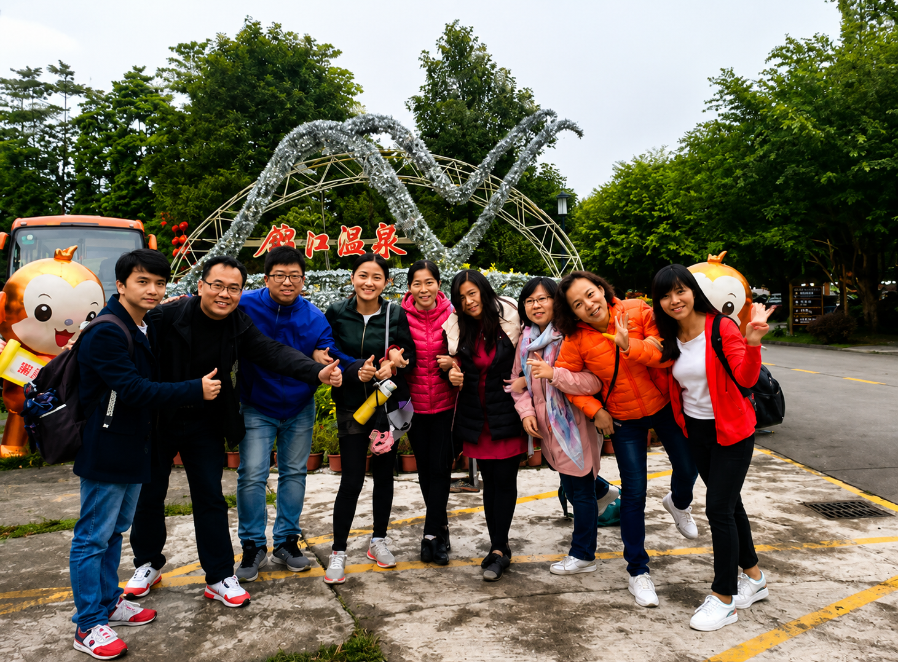

Equipment design
Process calculation, equipment layout and control design based on verified feed-water analysis & product-water specification.
PROJECT-ENGINEERED WATER TREATMENT SYSTEMS
KONCHE is an experienced own-brand manufacturer of complete water-treatment systems. We serve overseas EPC contractors, engineering integrators and industrial clients across the Middle East, Africa and Southeast Asia.

KONCHE is the water-treatment equipment brand of Shenzhen Konche Water Purging Equipment Co.,Ltd., manufacturing standardized and custom systems since 1997.
Who we are, who we serve and where our equipment is delivered.
Shenzhen Konche Water Purging Equipment Co.,Ltd. was founded in 1997 and is located in Bao'an District, Shenzhen, Guangdong, China. The company designs and manufactures standardized and custom water-treatment equipment under the KONCHE brand.
We provide full-set support including equipment design, in-house manufacturing, factory testing and technical services for overseas projects, widely deployed across the Middle East, Africa and Southeast Asia.
Factory and production capacity. From process calculation to factory acceptance testing, every system is completed and verified inside our facility.





Process calculation, equipment layout and control design based on verified feed-water analysis & product-water specification.
Skid fabrication, piping, instrument installation and control cabinet integration as complete pre-assembled units.
Full system running test before shipment. Manuals and connection requirements for water, power and drainage are included in the agreed document package.
Quality inspection runs through every phase from raw-material incoming to final shipment.
Membranes, pressure vessels, pumps, instruments and raw materials checked against project specifications.
Fabrication, welding and assembly are inspected strictly following approved engineering drawings.
Full system assembly and performance test before packaging & shipment.
Final check for packaging, shipping documents and destination-specific compliance requirements.
Management system certifications. Certificates available upon formal request.
CERTIFIED MANAGEMENT SYSTEM
CERTIFIED MANAGEMENT SYSTEM
CERTIFIED MANAGEMENT SYSTEM
A close-knit team that enjoys working and growing together. Trust, kindness and shared responsibility shape how we work with one another and with every partner.

Good cooperation begins with good people.
We are colleagues who support one another, communicate openly and take pride in solving problems as one team. Our team-building moments reflect the same friendly, responsible attitude that we bring to daily work.
Five commitments across the full equipment lifecycle.
Solution engineered according to feed-water report, capacity and target water-quality standard.
Professional process selection & configuration support before order confirmation.
Scheduled manufacturing, factory testing and global shipment coordination.
Operating manuals, maintenance instructions and remote technical clarification during equipment operation.
Supply of consumables & replacement components to sustain long-term system operation.
View Spare-parts sourcing service ↗START A PROJECT
Share your project requirements, feed-water data and target specification. We provide a tailored equipment proposal for overseas projects.